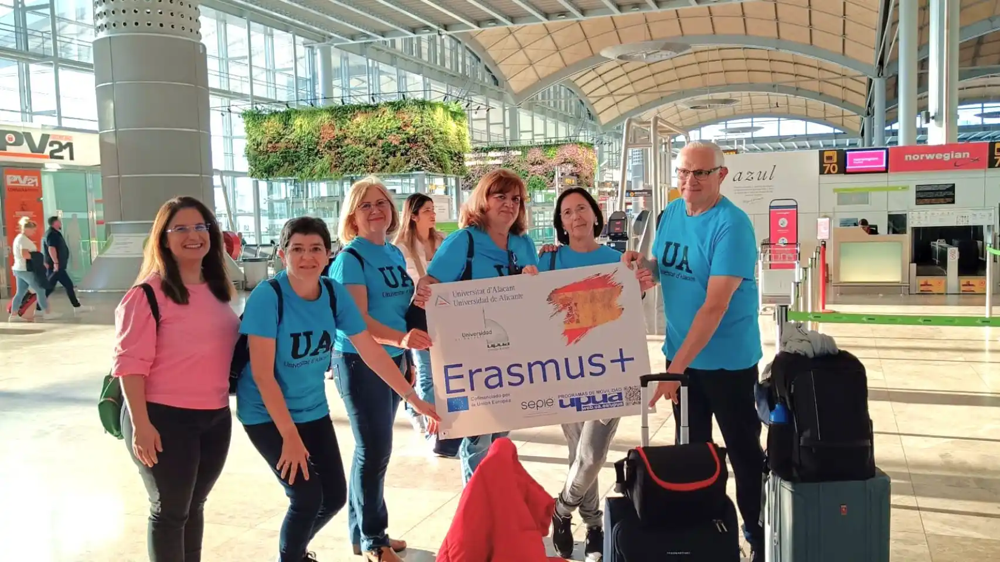

El programa Erasmus + celebra la seua primera reunió informativa
L'Ajuntament de Dos Hermanas, a través de la Delegació de Promoció Econòmica i Innovació, va celebrar recentment la primera reunió informativa amb alumnes i alumnes seleccionats per a participar en el programa Erasmus+ de pràctiques a l'estranger.
L'alumnat seleccionat, procedent de centres educatius de Formació Professional de Dos Hermanas, realitzaran les seues pràctiques de Formació en el Centre de Treball de 90 dies de duració en diversos països de la Unió Europea. En esta ocasió, els països que rebran a l'alumnat procedent de Dos Hermanas són Itàlia, Alemanya o Portugal, entre altres.
L'IES Miguel de Molins de Saragossa inicia la seua marxa Erasmus+
L'IES Miguel de Molins de Saragossa s'ha sumat este curs a l'aventura Erasmus+. Després d'haver aconseguit l'acreditació del programa, l'institut ha posat en marxa el primer projecte anomenat Finestres al futur.
Al llarg d'este curs s'organitzaran diferents mobilitats de docents i d'estudiants amb la finalitat de continuar treballant en la innovació educativa, l'educació on tots i totes tenim cabuda, la internacionalització del centre, i l'aprenentatge dinàmic i responsable.
“Hem tingut l'oportunitat d'observar com es treballa a Suècia, de conéixer un sistema educatiu dels més innovadors d'Europa i que més invertixen en educació (la major part dels centres són finançats pels municipis i estos destinen fins a un 40% del seu pressupost a l'educació)”, expliquen des del centre.